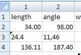
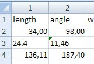

Ошибки, связанные с локализацией вообще не редкость. Думаю, каждый натыкался на случай, когда копируешь код из справки, а он не работает. А все потому, что в справке стоит точка, а по условиям локализации нужна запятая. Или запятая вместо точки с запятой.
Но еще неприятнее, когда нужен макрос, который должен работать в любой локализации. Здесь уже не обойдешься простой заменой символа в коде. Или как минимум такую замену нужно делать "на лету", во время исполнения макроса. Рассмотрим несколько примеров.
Десятичный разделитель
Предположим, имеется небрежно составленный файл Excel, в котором нас интересуют дробные числа. Небрежность состоит в том, что не соблюдается однообразие форматов. Например, имеются и ячейки, отформатированы как текстовые, и ячейки, отформатированные как числа. Ниже показано, как пользователь будет видеть такой файл на машинах с разной локализацией.
 
Ячейки с числовым форматированием будут отображаться по-разному в зависимости от локализации. Англичанин увидит 136.11, а русский 136,11. Это нормально.
А вот ячейки с текстовым форматированием будут показаны в Excel одинаково при любой локализации. Где-то запятые, где-то точки. Человеку такая каша не сильно помешает, но если такие данные импортировать в Visio, то велика вероятность появления ошибок.
Вид данных в системе с разделителем - точкой.
| 34 | 98 |
| 24.4 | 11,46 |
| 136.11 | 187.4 |
С запятой
| 34 | 98 |
| 24.4 | 11,46 |
| 136,11 | 187,4 |
Естественно, возникает желание создать функцию, приводящую подобные данные к нормальному виду. Она должна работать только с текстовым типом данных, пропуская числовые без изменения. А для преобразования из текстового представления нужно знать действующий в системе десятичный разделитель и заменять точку на запятую либо наоборот. Вот код такой функции.
Private Function ToDbl(ByVal sinp) As Double
If TypeName(sinp) = "String" Then
If IsNumeric("0.1") Then delimiter = "." Else delimiter = ","
If delimiter = "." Then
s = Replace(Trim(sinp), ",", ".")
Else
s = Replace(Trim(sinp), ".", ",")
End If
Else
s = sinp
End If
If IsNumeric(s) Then
ToDbl = CDbl(s)
Else
ToDbl = 0
MsgBox "Ошибка преобразования: " & CStr(sinp)
End If
End FunctionИ результаты ее работы в обеих системах (справа).
С разделителем - точкой.
| 34 | 98 | 34 | 98 |
| 24.4 | 11,46 | 24.4 | 11.46 |
| 136.11 | 187.4 | 136.11 | 187.4 |
С запятой
| 34 | 98 | 34 | 98 |
| 24.4 | 11,46 | 24,4 | 11,46 |
| 136,11 | 187,4 | 136,11 | 187,4 |
В приведенной функции разделитель вычисляется по выражению IsNumeric("0.1").
If IsNumeric("0.1") Then delimiter = "." Else delimiter = ","Возможно, более корректно было бы принять значение разделителя непосредственно из системы через Win32API. Однако IsNumeric прельщяет существенно более коротким кодом.
Но на всякий случай приведу и пример использования функции GetLocaleInfo:
Private Declare Function GetLocaleInfo Lib "kernel32" Alias "GetLocaleInfoA" (ByVal LOCALE As Long, _
ByVal LCType As Long, ByVal lpLCData As String, ByVal cchData As Long) As Long
Private Const LOCALE_USER_DEFAULT = &H400
Private Const LOCALE_ILDATE As Long = &H22
Private Const LOCALE_ICOUNTRY As Long = &H5
Private Const LOCALE_SENGCOUNTRY = &H1002 ' English name of country
Private Const LOCALE_SENGLANGUAGE = &H1001 ' English name of language
Private Const LOCALE_SNATIVELANGNAME = &H4 ' native name of language
Private Const LOCALE_SNATIVECTRYNAME = &H8 ' native name of country
Private Const LOCALE_SDECIMAL As Long = &HE
Private Const LOCALE_SLIST As Long = &HC
Private Const LOCALE_STHOUSAND As Long = &HF
Public Function GetInfo(ByVal lInfo As Long) As String
Dim Buffer As String
Dim Ret As String
Buffer = String$(256, 0)
Ret = GetLocaleInfo(LOCALE_USER_DEFAULT, lInfo, Buffer, Len(Buffer))
If Ret > 0 Then
GetInfo = Left$(Buffer, Ret - 1)
Else
GetInfo = ""
End If
End Function
Sub GetInfoExample()
Debug.Print "SList: " & GetInfo(LOCALE_SLIST)
Debug.Print "SDecimal: " & GetInfo(LOCALE_SDECIMAL)
Debug.Print "SThousand: " & GetInfo(LOCALE_STHOUSAND)
Debug.Print "SCountry: " & GetInfo(LOCALE_SENGCOUNTRY)
Debug.Print "SLanguage: " & GetInfo(LOCALE_SENGLANGUAGE)
Debug.Print "VisioListSep(): " & ActivePage.PageSheet.Cells("Scratch.A1").ResultStr(0)
End SubРазделитель списков
Сказанное выше касалось в основном десятичного разделителя. Но не менее важен разделитель списков.
Пример из справки - формула =MAX(PageWidth,PageHeight), будучи вписанной в ячейку шейп-листа, отлично работает в любой локали. Это потому что в шейп-листе пользователь видит универсальные формулы, а в универсальной формуле разделитель споска - всегда запятая.
Теперь подлянка от функции SETF. Предположим, мы хотим вписать приведенную выше формулу с помощью SETF, то есть в другой ячейке поместить
=SETF(GetRef(Scratch.D1),"MAX(PageWidth,PageHeight)")Так вот, это уже будет работать только у американцев, но не будет у итальянцев. Дело в том, что SETF передает формулу в локальную формулу, не универсальную. И в этом случае запятая для итальянцев является криминалом. Чтобы как-то выкрутиться, придумали функцию ListSep(). Пересылающая формула стала такой
=SETF(GetRef(Scratch.D1),"MAX(PageWidth"&LISTSEP()&"PageHeight)")Вот это работает уже в любой локали, так как в целевую формулу будет подставлена либо запятая, либо точка с запятой.
Другой вариант - если мы пытаемся прописать похожую формулу с помощью VBA. В принципе, можно по аналогии использовать разделитель LOCALE_SLIST, предварительно полученный с помощью GetLocaleInfo. К счастью, это не обязательно. Так как для VBA доступны и Formula, и FormulaU, можно просто использовать FormulaU и всегда писать список через запятую.
Небольшой нюанс - функция ListSep() демонстрирует результат в шейп-листе далеко не сразу после переключения локали. Это не влияет на работу, но может слегка сбить с толку. Если в ячейке записана эта функция, то после изменения разделителя в системе значение ячейки не изменяется. Но после перезаписи формулы все приходит в норму.
Существуют списки, игнорирующие разделитель списков. Например, при использовании в Shape Data фиксированных списков в ячейку Format тоже заносится список. Типа "0.4;0.2;0.3". Разделитель в этом списке на зависит от локали, всегда используется точка с запятой.
Можно еще сказать пару слов по поводу списка в функции RGB. Функция необычна тем, что ее результат заранее непредсказуем. Так как функция действует через таблицу цветов документа, результат вычисляется не напрямую, а с учетом уже имеющихся в таблице значений. Например, при установке .Cells("LineColor").Formula = "RGB(0,0,0)" можем получить следующие значения формул и результата:
| RGB(0,0,0) | Formula |
| RGB(0,0,0) | FormulaU |
| 28 | ResultIU |
| RGB(0, 0, 0) | ResultStr |
И если значения формул предсказуемы, то вместо значения 28 (ResultIU) вполне может оказаться какое-нибудь другое.
Комбинация RGB с SETF укладывается в рамках вышеизложенного. То есть работает
SETF(GetRef(LineColor),SUBSTITUTE("RGB(0,0,255)",",",LISTSEP())).Интересные варианты могут получиться при наличии вложенных списков. Например в том же Fixed List в Shape Data может встретиться формула типа
="RGB(0,0,255);RGB(255,0,0);RGB(0,255,0)"Здесь в одной формуле мы видим список первого уровня с неизменяемым разделителем (точка с запятой) и вложенные списки внутри RGB, которые уже подвержены влиянию локали и при работе через локальную формулу потребуют использования LISTSEP().
Выводы:
Если вы хотите продлить жизнь своим решениям в Visio, желательно делать их нечувствительными к локализации как на уровне макросов, так и на уровне шейп-листа.
1. На уровне макросов старайтесь использовать универсальные формулы .FormulaU вместо локальных .Formula и универсальные разделители.
2. При необходимости записывать макросом дробные значения в локальные формулы используйте разделители, получаемые функцией GetLocaleInfo (или через IsNumeric("0.1")).
3. В шейп-листе совместно с функциями типа SETF следует использовать подстановку разделителя, получаемого функцией LISTSEP().
4. При необходимости импортировать "замусоренные" данные, в которых может присутствовать текстовое представление дробных чисел, следует использовать преобразование типа приведенной выше функции ToDbl.
Приложение
Приложен файл Tester.vsd, послуживший базой для упоминавшихся проверок. В том числе в файле присутствуют пример работы с GetLocaleInfo и функция ToDbl.